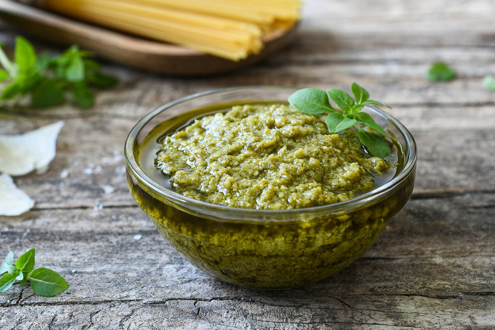

Recetas
Pesto de Albahaca
Ingredientes
- 3 tazas de albahaca fresca, lavada y escurrida
- 1 diente de ajo, pelado
- 1/3 taza de piñones, pelados
- 3 cucharadas soperas de queso parmesano, rallado
- 3/4 taza de queso romano, rallado
- ½ taza de aceite de oliva extra virgen
- ½ cucharadita de sal
- Pimienta al gusto

Preparación
- En un procesador de alimentos o licuadora combina albahaca, ajo, piñones, quesos, aceite de oliva, sal y pimienta. Mezcla hasta que todos los ingredientes se integren muy bien. Posiblemente los ingredientes se peguen a las paredes de la licuadora. Detenla y con una cuchara o espátula muévelos hacia abajo y mezcla nuevamente. Repite cuantas veces sea necesario hasta formar una pasta.
- Prueba de sal, dependiendo del nivel de sal del queso que estás usando, podría necesitar un ajuste. Añade pimienta al gusto. Si notas que el pesto es excesivamente espeso puedes agregar más aceite.